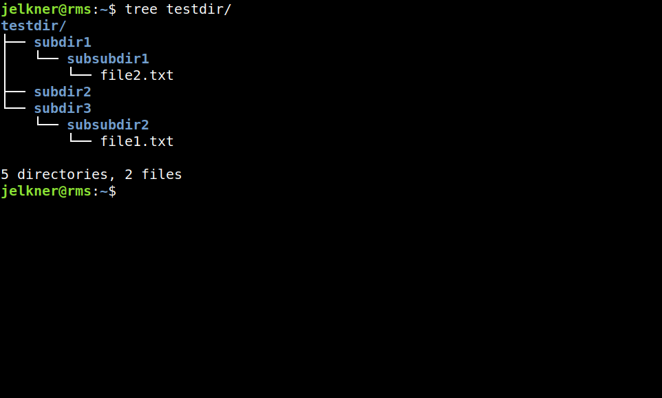

Type each of the following commands at the unix command prompt. Observe the result of each, and apply your new understanding of the file system to make sense of what you see.
$ mkdir testdir
$ mkdir testdir/subdir1
$ mkdir testdir/subdir2
$ cd testdir
-
Try to anticipate what you will see before running this command. If you get it right, pat yourself on the back and know that your understanding of both the file system and the new unix commands is growing.
$ ls
$ cd ..
What did this do? What is your current working directory now? If you said,
my home directory
, you're right!$ cd testdir
$ mkdir subdir3
$ mkdir subdir1/subsubdir1
$ mkdir subdir3/subsubdir2
$ touch subdir3/subsubdir2/file1.txt
$ touch subdir1/subsubdir1/file2.txt
$ cd ..
$ tree testdir
If you followed each step carefully, you should see this in your terminal:
